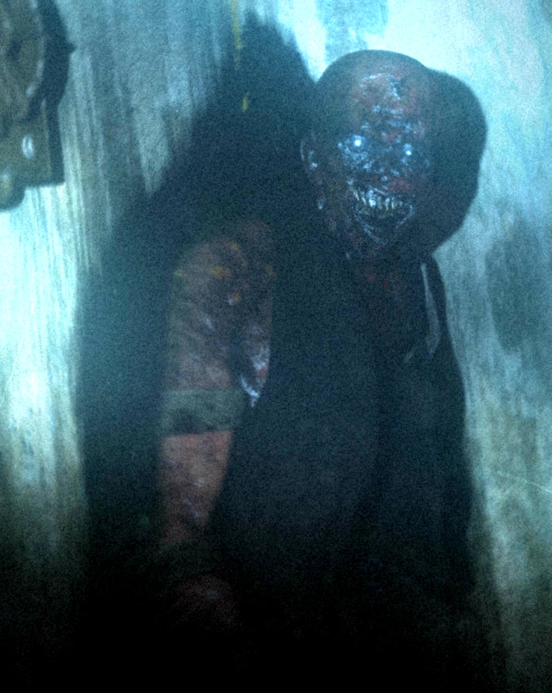

SCP-106:

informacion sobre scp-106:
SCP-106 parece ser un humanoide anciano, con un aspecto general de descomposición avanzada. Este aspecto puede variar, pero la cualidad "descompuesta" se observa en todas las formas. SCP-106 no es excepcionalmente ágil, y permanecerá inmóvil durante varios días seguidos, esperando a su presa. SCP-106 también es capaz de escalar cualquier superficie vertical y puede mantenerse suspendido boca abajo de forma indefinida. Al atacar, SCP-106 intentará incapacitar a la víctima dañando órganos importantes, grupos de músculos o tendones, y a continuación, llevara a su víctima incapacitada a su Dimensión de Bolsillo. SCP-106 parece preferir presas humanas de entre 10 a 25 años de edad.
SCP-106 causa un efecto ''corrosivo'' en toda materia sólida que toque, provocando una destrucción física en los materiales varios segundos después del contacto. Esto se observa como oxidación, descomposición, y agrietamiento de los materiales, y la creación de una mucosidad negra similar a la sustancia que cubre a SCP-106. Este efecto es particularmente perjudicial para los tejidos vivos, y se asume como una acción de "pre-digestión". La corrosión continua por seis horas después del contacto, tras lo cual los efectos parecen desvanecerse.
SCP-106 es capaz de pasar a través de materia sólida, dejando tras de sí una gran mancha de mucosidad corrosiva. SCP-106 es también capaz de "desaparecer" dentro de la materia sólida, entrando en lo que se presume es una forma de "Dimensión de Bolsillo". SCP-106 puede salir de esta dimensión desde cualquier punto conectado al punto de inicial de entrada (por ejemplo: Entrando en la pared interior de una habitación y saliendo de la pared exterior; Entrando en un pared, y saliendo desde el techo). No se sabe si este es el punto de origen de SCP-106, o un simple ''guarida'' creada por SCP-106.